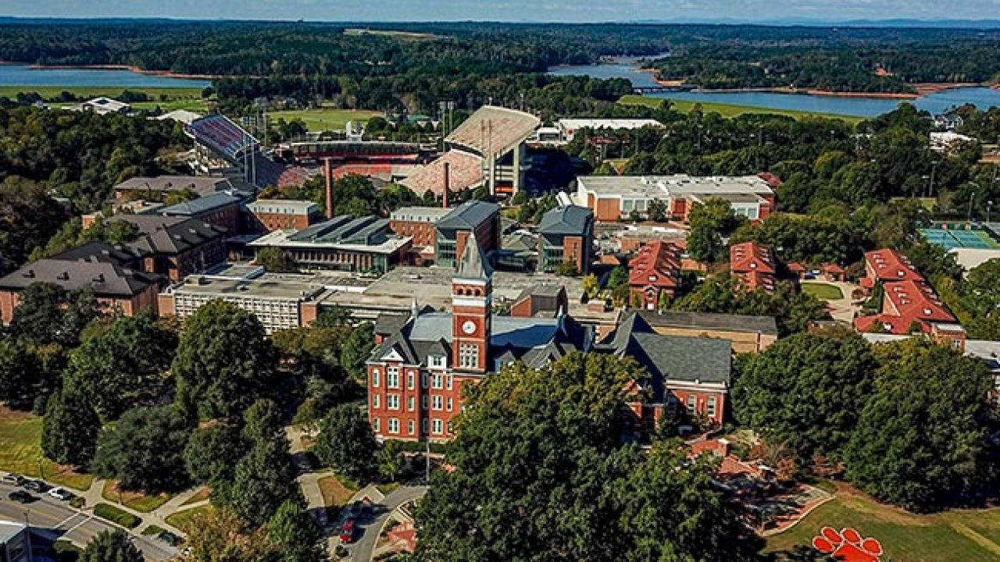

Clemson University
I'm Ruthu Gandal Shankare Gowda, a graduate student at Clemson University, specializing in Computer and Information Science with a focus on Data Science and Informatics. My passion lies in data analysis, and throughout my time at Clemson, I've been fortunate to engage in a diverse array of courses and workshops that have deepened my understanding and honed my skills in this field. I've undertaken numerous projects in data analytics and big data, further fueling my enthusiasm for this domain. With a GPA of 3.6 out of 4.0, Clemson has played a pivotal role in shaping me into a more proficient and knowledgeable individual.
Courses
- CPSC 6620 : Database Management Systems
- CPSC 6300 : Applied Data Science
- CPSC 8650 : Data Mining
- CPSC 6440 : Cloud Computing Architecture
- DSA 8660 : Data Management and Warehousing
- STAT 8010 : Statistical Methods 1
Achievements
-
Clemson Ring Ceremony 2024